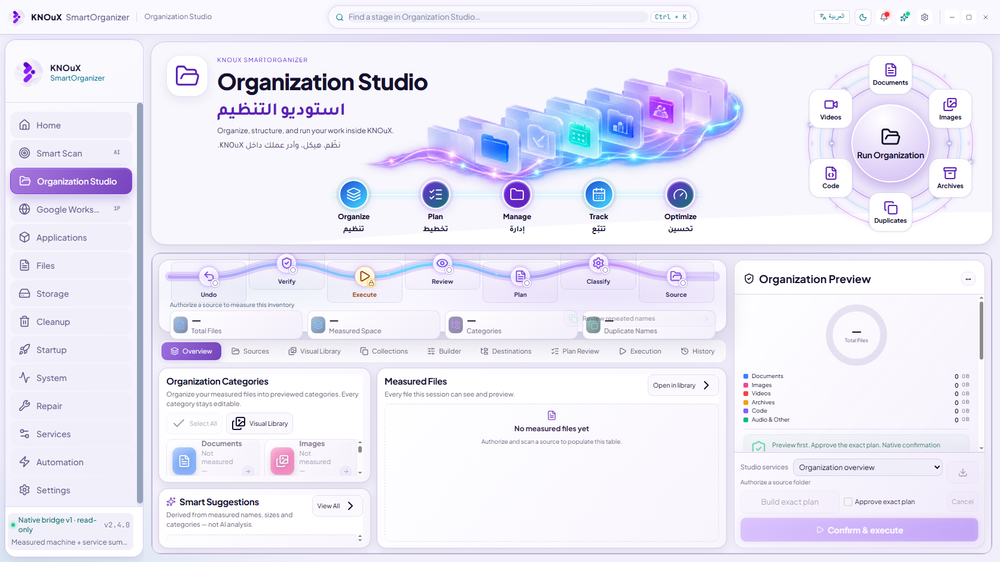

Organization Studio · actual Electron evidence Before/current runtime. Current native results are disposable test files, never owner files. Header geometry/art preserved. No pixel-perfect or release claim.
Before · 1672×941 
Current browser-unavailable exact-before-after-plan idle-sources native-cancel-partial native-collection native-library native-missing-source-failed native-source-controls overview-preserved selected-native-preview stage-1-day-ar-1366x768 stage-1-day-en-1672x941 stage-1-day-en-1920x1080 stage-1-night-en-1672x941 stage-2-day-ar-1366x768 stage-2-day-en-1672x941 stage-2-day-en-1920x1080 stage-2-night-en-1672x941 stage-3-day-ar-1366x768 stage-3-day-en-1672x941 stage-3-day-en-1920x1080 stage-3-night-en-1672x941 stage-4-day-ar-1366x768 stage-4-day-en-1672x941 stage-4-day-en-1920x1080 stage-4-night-en-1672x941 stage-5-day-ar-1366x768 stage-5-day-en-1672x941 stage-5-day-en-1920x1080 stage-5-night-en-1672x941 stage-6-day-ar-1366x768 stage-6-day-en-1672x941 stage-6-day-en-1920x1080 stage-6-night-en-1672x941 stage-7-day-ar-1366x768 stage-7-day-en-1672x941 stage-7-day-en-1920x1080 stage-7-night-en-1672x941 stage-8-day-ar-1366x768 stage-8-day-en-1672x941 stage-8-day-en-1920x1080 stage-8-night-en-1672x941 stage-9-day-ar-1366x768 stage-9-day-en-1672x941 stage-9-day-en-1920x1080 stage-9-night-en-1672x941 verified-native-move verified-native-restore Native runtime proof · Scope and limits